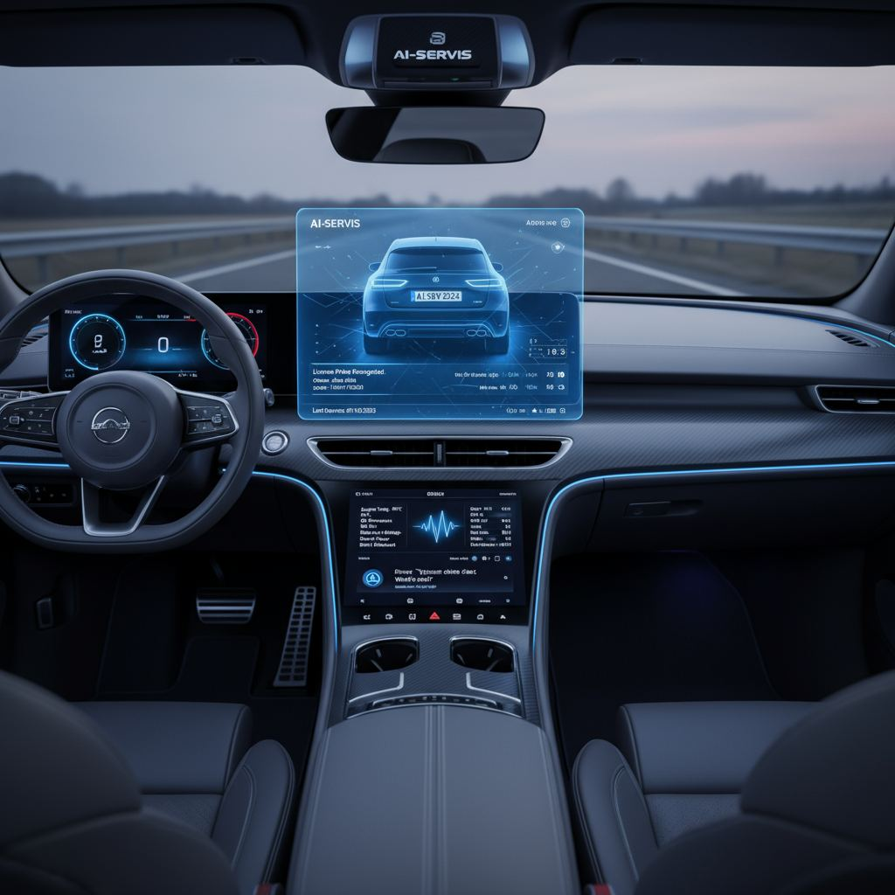

Your fleet, your data. Not the manufacturer's.
A new company car tells its manufacturer where and how you drive. MIA reads OBD and Audi diagnostics for you alone, runs on a Raspberry Pi under the seat and takes voice commands, so the driver keeps hold of the wheel. No cloud, and she writes nothing to the car.
- Built on an Audi A4 Cabriolet 8H
- Raspberry Pi 4B + ESP32 + Android
- Read-only access to the vehicle
What MIA is cooking up for business
This is a plan, not a promise. None of it is finished or validated yet.
Sales reps on the road
- CRM by voice, hands stay on the wheel
- Meeting notes dictated on the drive back
- New leads straight to where they belong
- Customer rounds without pointless miles
Field technicians
- Jobs from dispatch read out right in the van
- Checklists ticked off by voice, not greasy fingers
- The customer knows when you'll arrive, and nobody phones while driving
- Service reports dictated, not typed at home at night
The boss in the back seat
- Encrypted calls with no one else listening
- The calendar in the car, not in someone else's cloud
- Documents read aloud on the way to the meeting
- What's said in the car stays in the car
What works today
No slide deck. This is written and passes automated tests in CI or runs in simulation. Bench, hardware and in-car validation is still under way.
OBD-II telemetry
Engine speed, coolant temperature, battery voltage and ignition state, from an ELM327 digital twin and passive CAN capture on ESP32.
Read-only Audi diagnostics
A VAG/Audi diagnostics bridge that only reads. MIA does not write to the vehicle bus by default.
Number plate recognition
Plate recognition in the Android app; the Czech motorway vignette check runs on the Pi.
Voice commands
Voice command handling on the Pi and spoken feedback in the Android app.
Android companion app
BLE pairing, a live telemetry card and a local rules engine. Dashcam recording is still in development.
Raspberry Pi gateway
REST and WebSocket API, ZeroMQ messaging and systemd services, with simulation fallbacks when hardware is absent.
Technology
Raspberry Pi 4B under the seat
The API, messaging and AI services run right in the car, not in someone else's data centre.
ESP32s behind the dash
They listen on OBD-II and CAN and drive local inputs and outputs. They write nothing to the control units.
Phone in the mount
Dashboard, BLE link and plate reading on the driver's phone. The dashcam is still being finished.
Cards on the table
Requirements, design decisions and validation records are public on GitHub. We hide nothing.
Want a fleet that works for you, not for the manufacturer?
There's no price list and we won't make one up. We're looking for pilot crews and partners who aren't afraid of a screwdriver. Tell us what you need and we'll work it out.